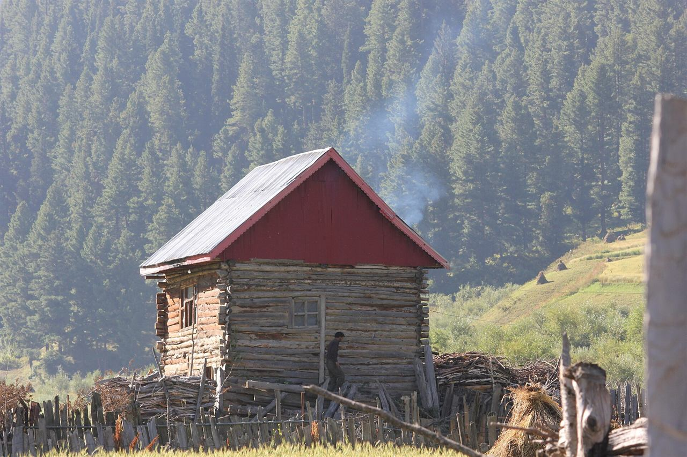
Group journeyModerateOffbeat Kashmir & Gurez
Village stays, riverside pauses, and a week with room to wander.
✓ Three nights in Gurez✓ Riverside village stays
₹22,500guide / person
View itinerary Discover Kashmir, Ladakh and Jammu with routes for valley explorers, seasonal travellers and people who enjoy sharing the journey.
Find your journey ↓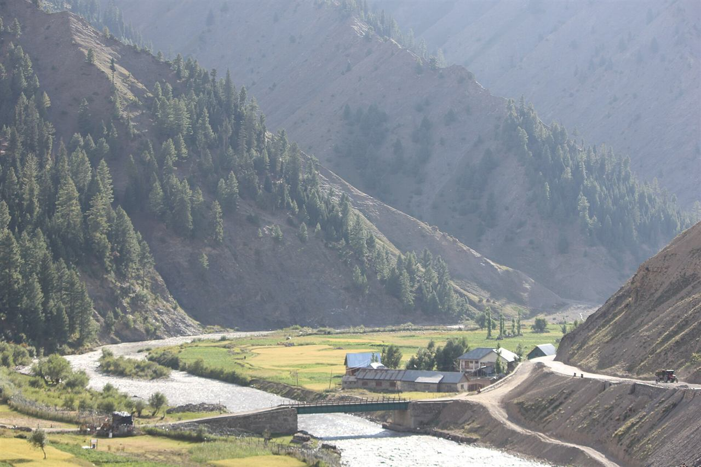

Group journeyModerateVillage stays, riverside pauses, and a week with room to wander.
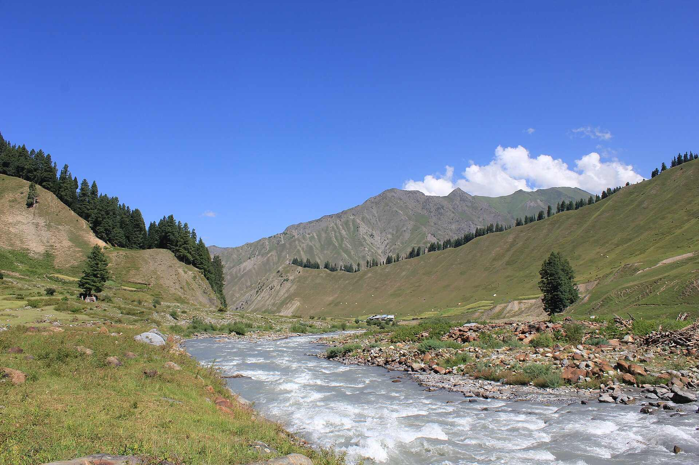
Group journeyModerateFollow the river into a quieter side of Kashmir, with longer village stays.
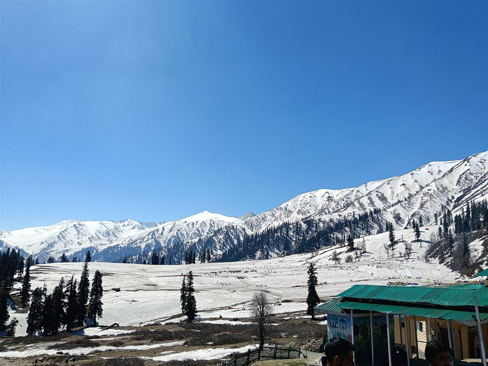
Group journeyModerateCrisp mornings, warm kahwa, and a flexible winter circuit.
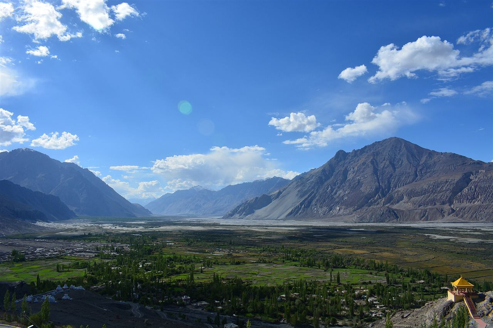
Group journeyModerateHigh mountain landscapes with extra space at the start to settle in.
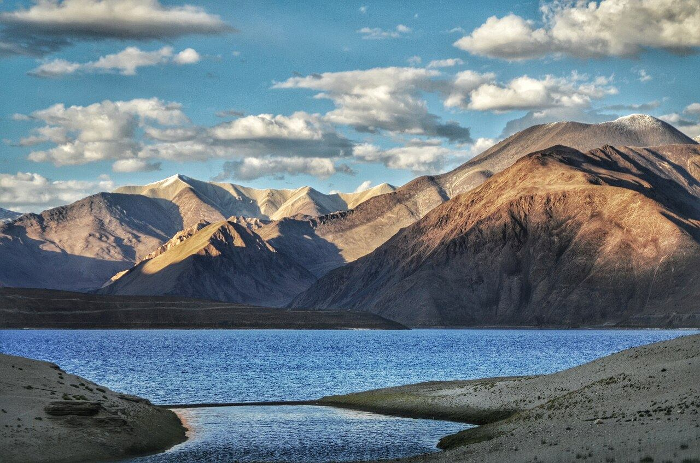
Group journeyChallengingA longer high-altitude itinerary, with permissions and suitability at the centre.
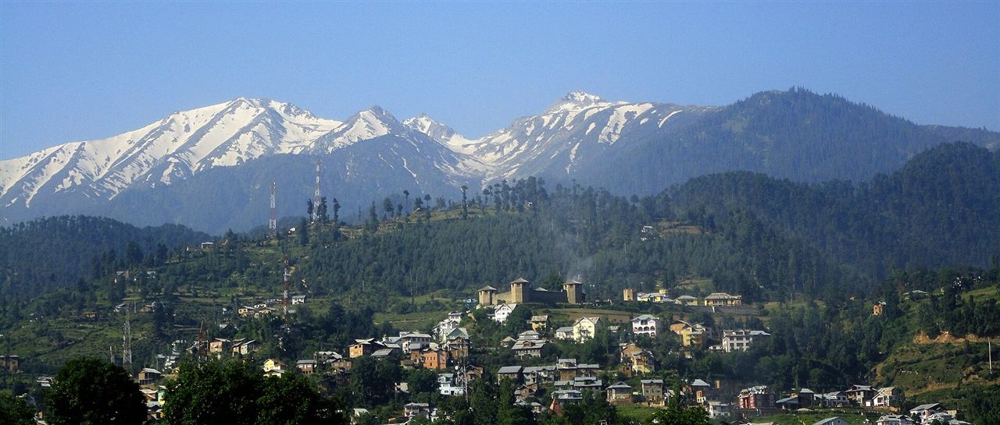
Group journeyModerateA longer hill-country itinerary, designed around local conditions and quiet days.
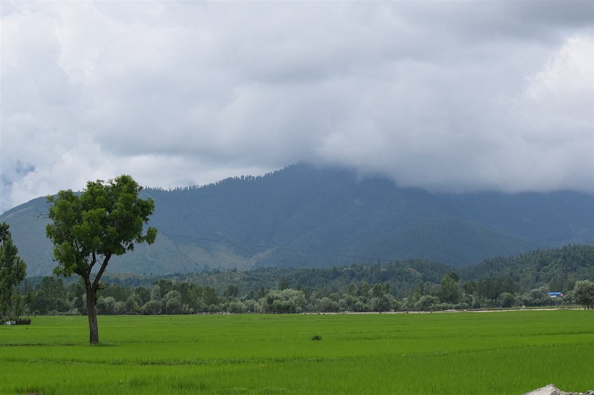
Group journeyVariableA quieter valley circuit with village time and flexible meadow days.
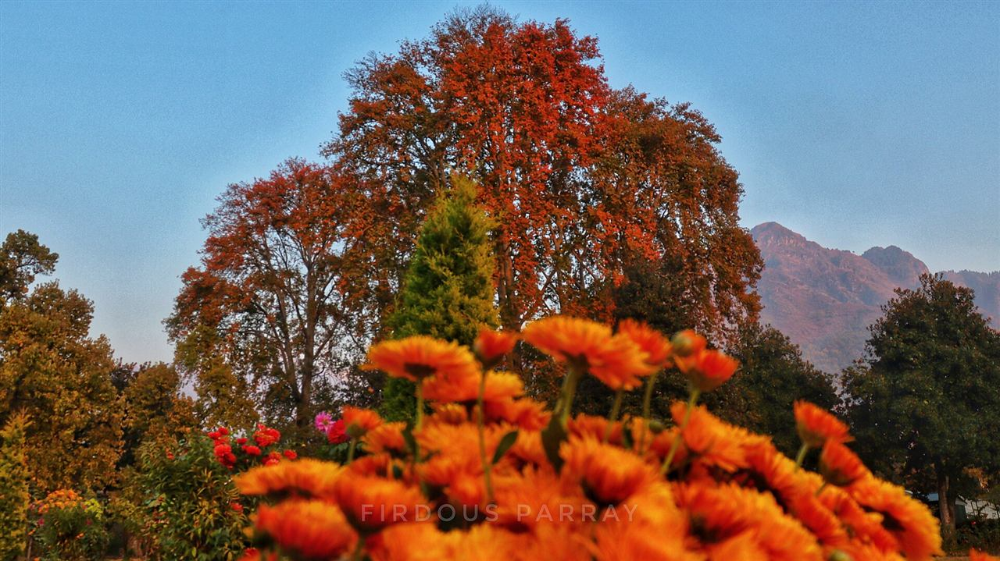
Group journeyVariableCity gardens, mountain light, and a gentle seasonal valley circuit.
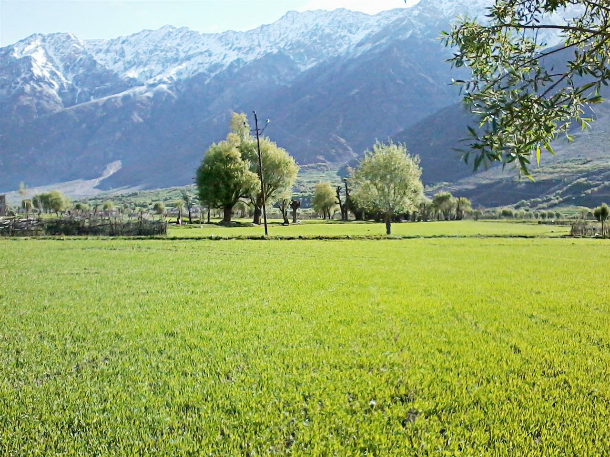
Group journeyVariableA mountain-road itinerary with deliberate pacing and flexible pass crossings.
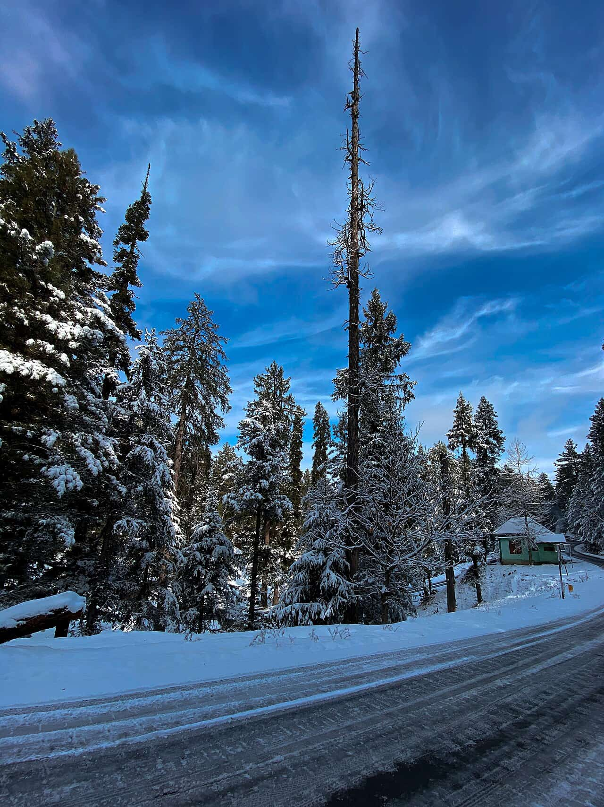
Group journeyWinter sightseeing · walking and road conditions varyA seven-day winter route through the southern springs, Kokernag, Achabal and Srinagar, with a flexible mountain outing.
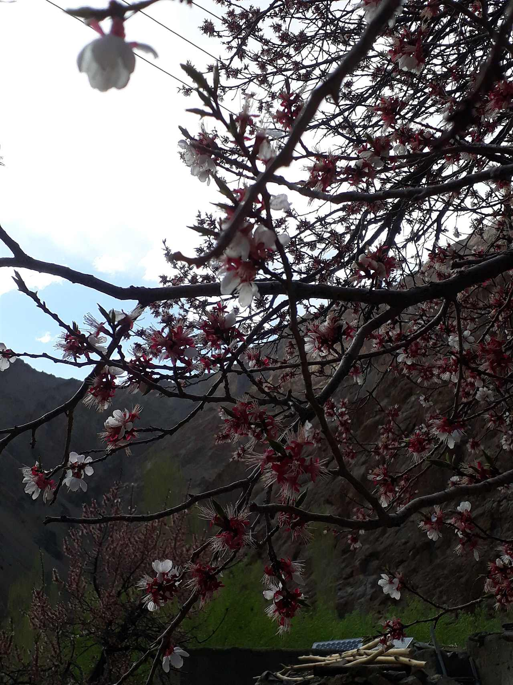
Group journeyVariableA seasonal cultural route proposal. Blossom timing varies and is never guaranteed.
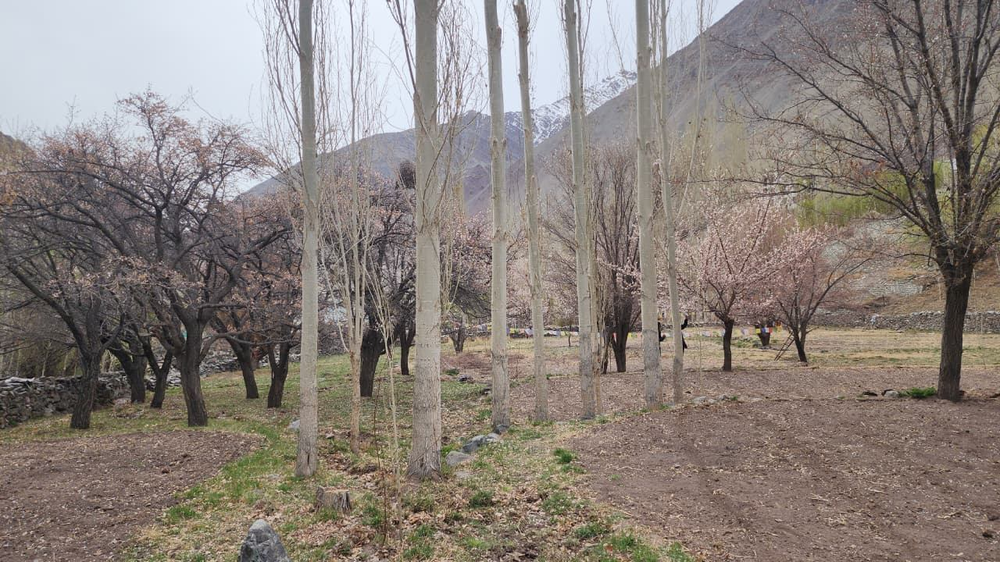
Group journeyVariableA cross-region road itinerary; direction, pacing, and suitability need careful confirmation.
ⓘ Guide prices for planning, subject to availability and supplier confirmation. Your written quote confirms the total, taxes, sharing basis, and exact inclusions.